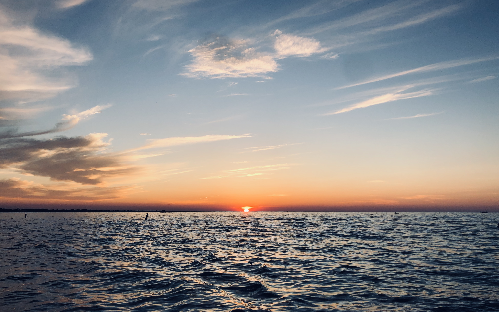

About Me Page
I am from Akron Ohio, but spends summers up on Lake Erie.

I currently go to school at the United States Naval Academy.
I am majoring in Robotics and Controls Engineering, and intend
to graduate in May 2022 and commission as a Submarine Officer.
Over my time at USNA I have had multiple opportunities to
experience parts of the fleet and travel around the world.
Sophomore year I was able to go on a submarine cruise out
of Bangor Washington.
Junior year I was worked as a weapons instructor over plebe
summer, and then travel to Egypt for two weeks. More pictures
from the trip to Egypt can be found
here.
Senior year I went on
an aviation cruise and then worked plebe summer with the
class of '25.
Rating these different experiences based on usefulness,
fun, and overall experience, they would rank as follows:
- Trip to Egypt
- Submarine Cruise
- Aviation Cruise
- Plebe Summer
- Weapons Detail
I am in 8th company, each company has something
special that they are responsible for and 8th handles the goats
during football games. The Naval Academy has been a challenging
but rewarding experience.
Back Home
My School